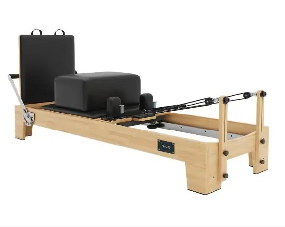

Auch bekannt als Kernbett in unserem englischen Katalog
Der „Reformer“ ist das Herzstück jedes Studios. Wir fertigen ihn aus importiertem Gummibaumholz, mit Klavierlack oder aus weißem Ahorn der FAS-Qualität sowie aus kroatischer Buche, mit Edelstahlschienen, geräuschlosen Lagerrollen und verstellbaren Federstangen. Er ist in australischen und europäischen Geometrien, als Vollschienen- und Klappausführung sowie in der M-Serie für große kommerzielle Studios erhältlich.

Jedes der unten aufgeführten Modelle wird auf Bestellung auf derselben Werkbank gefertigt. Vergleichen Sie Holzart, Größe, Federsatz und Positionierung und teilen Sie uns dann die Artikelnummer mit – wir erstellen Ihnen ein Angebot für dieses Modell.
Die Preise werden pro Bestellung angegeben – die Preise für Vertreter werden nicht veröffentlicht. Senden Sie uns die gewünschten Artikelnummern, und wir senden Ihnen ein Angebot sowie einen Musterplan zu.
| Modell | Code | Rahmen / Holz | Größe | Federn | Positionierung |
|---|---|---|---|---|---|
| Reformer aus Kautschukholz – im australischen Stil (Value Line) | NIC101 | Einheimisches Kautschukholz | 2.30 × 0.65 × 0.35 m | 6 Federn · Deutsche Wagner-Federn | Wertlinie |
| Importiertes Gummibaumholz „Reformer“ – im australischen Stil | NIC102 | Importiertes Kautschukholz | 2.35 × 0.68 × 0.38 m | 6 Federn · Deutsche Wagner-Federn | Bestseller |
| Importiertes Kautschukholz „Reformer“ – im europäischen Stil | NIC103 | Importiertes Kautschukholz | 2.35 × 0.69 × 0.35 m | 6 Federn · Deutsche Wagner-Federn | Europäische Geometrie |
| Reformer aus weiß lackiertem Ahorn im „Piano-Lack“-Look – im australischen Stil | NIC201 / A | Ahorn mit Klavierlack in Weiß | 2.35 × 0.68 × 0.38 m | 6 Federn · Deutsche Wagner-Federn | Klavierlack |
| FAS Weißahorn „Reformer“ – im australischen Stil | NIC301 | Weißahorn in FAS-Qualität | 2.35 × 0.68 × 0.38 m | 6 Federn · Deutsche Wagner-Federn | FAS-Güteklasse |
| FAS White Maple Full-Track-Reformer | NIC302 | Weißahorn in FAS-Qualität | 2.35 × 0.68 × 0.38 m | 6 Federn · Deutsche Wagner-Federn | Vollständige Titel |
| Kroatische Buche Reformer — im europäischen Stil | NIC201 / B | Kroatische Buche | 2.35 × 0.69 × 0.35 m | 6 Federn · Deutsche Wagner-Federn | Europäische Geometrie |
| FAS-Weißahorn „Reformer“ – im europäischen Stil | NIC303 | Weißahorn in FAS-Qualität | 2.35 × 0.69 × 0.35 m | 6 Federn · Deutsche Wagner-Federn | FAS-Güteklasse |
| Reformer aus weiß lackiertem Ahorn im Klavierlack-Look — im europäischen Stil | NIC202 | Ahorn mit Klavierlack in Weiß | 2.35 × 0.69 × 0.35 m | 6 Federn · Deutsche Wagner-Federn | Klavierlack |
| Black Knight Reformer | NLH101 | Weißahorn | 2.39 × 0.62 × 0.38 m | 6 Federn · Deutsche Wagner-Federn | Bestseller |
| Black Knight „Reformer“ mit Half-Tower-Gehäuse | NLH102 | Weißahorn | 2.39 × 0.62 × 1.98 m | 6 Federn · Deutsche Wagner-Federn | Bestseller |
| Black Knight „Reformer“ mit Half-Tower – Gen 1 | NLH201 | Weißahorn | 2.42 × 0.63 × 1.98 m (Bettenhöhe 43 cm) | 5 Federn · Deutsche Wagner-Federn | Gen 1 |
| Black Knight „Reformer“ mit Half Tower – Gen 2 | NLH202 | Weißahorn | 2.42 × 0.63 × 1.98 m (Bett-Höhe 43 cm) | 5 Federn | Gen 2 |
| Super-Reformerer der M-Serie – vollständig importiert | NIM101 | Komplett importierter Rahmen der M-Serie | 3.18 × 0.88 × 0.96 m / 2.8 × 0.88 × 0.96 m | Wagner-Klavierdrahtfedern der deutschen Güteklasse A | M-Serie |
| Super-Core-Maschine der M-Serie – vollständig importiert | NIM102 | Komplett importierter Rahmen der M-Serie | 3.28 × 0.9 × 0.88 m | Wagner-Klaviersaitenfedern der deutschen Güteklasse A | M-Serie |
| Super-Reformerer der M-Serie — Koreanische Komponenten | NIM103 | Rahmen der M-Serie · Koreanische Komponenten | 3.18 × 0.88 × 0.96 m / 2.8 × 0.88 × 0.96 m | Stahlfedern der Marke „Sangbo“ aus Korea | M-Serie |
| Aluminium-Vollschienen-Reformer | NLH501 | Aluminiumlegierung | 2.35 × 0.69 × 0.35 m | 6 Federn · Deutsche Wagner-Federn | Vollständige Titel |
| Faltbarer Aluminium-Reformer – weißer Rahmen | NLH601 | Aluminiumlegierung | 2.3 × 0.62 × 0.31 m · gefaltet 1.25 × 0.62 × 0.42 m | 6 Federn · Deutsche Klavierdrahtfedern | Zusammenklappbar |
| Faltbarer Aluminium-Reformer – schwarzer Rahmen | NLH602 | Aluminiumlegierung | 2.3 × 0.62 × 0.31 m · gefaltet 1.25 × 0.62 × 0.42 m | 6 Federn · Deutsche Klavierdrahtfedern | Zusammenklappbar |
| Kompaktes Studio aus Aluminium Reformer | NLH801 | Aluminiumlegierung | 2.35 × 0.62 × 0.35 m | 6 Federn · Deutsche Klavierdrahtfedern | Kompakt |
Alle Modelle können hinsichtlich Holzart, Polsterfarbe, Federung und Verpackung individuell angepasst werden. Die angegebenen Maße entsprechen der Standardausführung – andere Maße sind auf Anfrage erhältlich.
Eröffnung oder Erweiterung eines Studios: aufeinander abgestimmte 5-teilige Sets in einer Bestellung und mit einer einzigen Lieferung.
Containerladungsprogramme mit eigener Modellnummerierung und eigenem Datenblatt.
Herstellung unter Eigenmarke: Ihr Logo auf dem Rahmen, Ihre Farb- und Lederspezifikationen.
Ladder Barrel, Spine Corrector und die bidirektionale Ladder Bed für den klinischen Einsatz.
Kompakte Aluminium- und klappbare Serien für Wellnessräume mit begrenztem Platzangebot.
FBA-konforme Verpackung und Etikettierung für Reformer und faltbare Artikel für den privaten Gebrauch.
Fordern Sie noch heute ein individuelles Angebot an und nehmen Sie Kontakt mit kostenlose Muster auf.
Kontaktieren Sie unser Team